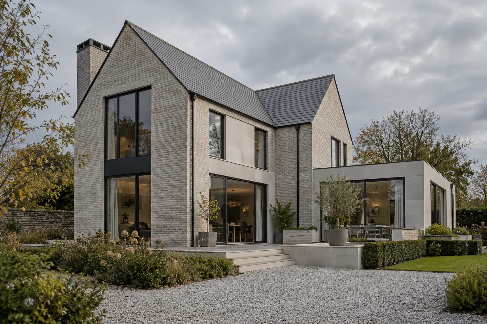

Foundations &
ground-level work
The starting point for a new structure, shaped around the requirements of your project.
Residential construction in Dublin
Foundations, masonry, structural work and complete renovations. A practical approach to your next big project.
Tell us about your project
An imagined residential build. AI-generated illustration.
The work behind the result
Construction services covering the structure of a home and the details that complete it.
The starting point for a new structure, shaped around the requirements of your project.
Building the walls, openings and structure that give a home its shape.
Substantial changes to existing homes, from the underlying structure to the finished rooms.
Bringing together the surfaces and details, inside and out.
Illustrative residential projects showing the ambition behind this direction.
Residential construction inspiration
Renovation & finishing inspiration
Bring your ideas, project details or existing plans to the conversation.
Start with the property, the proposed works and your current project stage.
Discuss the structural requirements, finishes and information needed for a quote.
Clarify the work involved, sequencing and proposed timing before starting.
Your next project
From early ideas to a defined scope. Tell us where your project stands.
This is a demonstration form. Use sample details to try it. Nothing is sent or saved.